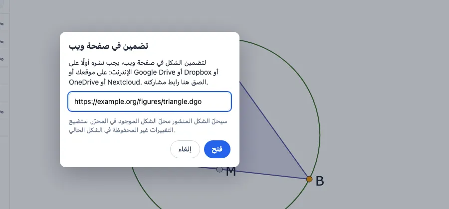
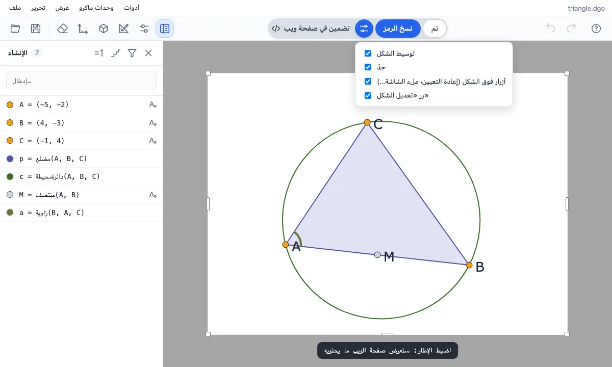
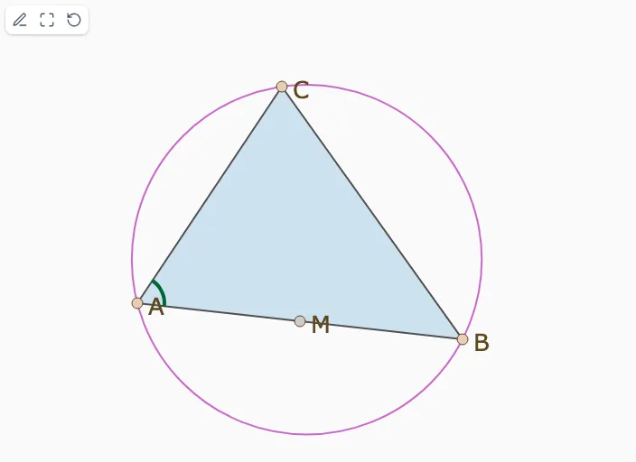

التضمين في صفحة ويب
يمكن عرض شكل من DocGeo في أي صفحة ويب — موقعك، أو مقرر على Moodle، أو مدوّنة — وتحريكه فيها كما في DocGeo. يكفي أن تلصق في HTML الصفحة رمزًا يُعدّه المحرّر. يتكيّف الشكل مع عرض الصفحة، حتى على الهاتف.
المبدأ
لا تحتوي الصفحة على الشكل: عند كل عرض تقرؤه من المكان الذي نشرته فيه على الإنترنت. لذلك:
- يجب أولًا رفع الشكل إلى الإنترنت، كما في مشاركته برابط؛
- لتحديث الصفحة يكفي استبدال الملف المنشور: تعرض كل الصفحات التي تضمّنه النسخة الجديدة فورًا، دون تغيير رمزها.
خطوة بخطوة
-
احفظ الشكل (Ctrl S)، ثم ارفع ملف
.dgoإلى الإنترنت: على موقعك أو Google Drive أو Dropbox أو OneDrive أو Nextcloud. انسخ رابط مشاركته. -
اختر ملف › تضمين في صفحة ويب…. إذا لم يُفتح
الشكل من رابطه، يطلبه DocGeo: الصقه وانقر
فتح. يحلّ الشكل المنشور عندئذٍ محلّ شكل
المحرّر، وهذا يضمن أن الرمز سيعمل.

- يظهر إطار فوق الشكل: ستعرض الصفحة بالضبط ما يحتويه. مقابضه (الزوايا ومنتصفات الأضلاع) تغيّر حجمه، وحوافه وبطاقته تحرّكه. للتأطير يمكنك أيضًا التكبير أو تحريك العرض أو تدوير شكل ثلاثي الأبعاد؛ ويبقى الشكل قابلًا للتحريك.
-
اضبط الخيارات عند الحاجة بالزر الموجود بجانب
نسخ الرمز.

- انقر نسخ الرمز، ثم الصق هذا الرمز في HTML صفحتك.
- يزيل تم أو Esc الإطار.
الخيارات
| الخيار | الأثر |
|---|---|
| توسيط الشكل |
يحيط الرمز بالوسم <center>:
يتوسّط الشكل الصفحة.
|
| حدّ | خط رمادي رفيع حول الشكل. |
| أزرار فوق الشكل | شريط صغير في أعلى الشكل، يظهر عند مرور الفأرة فوقه: إعادة تعيين الشكل، وعرضه بملء الشاشة. |
| زر «تعديل الشكل» | يضيف إلى هذا الشريط زرًا يفتح الشكل في المحرّر، في علامة تبويب جديدة. ألغِ تحديده مثلًا كي لا يرى الطلاب الإنشاء. |
تكون كل الخيارات محدّدة في البداية؛ وتبقى اختياراتك حتى إغلاق المحرّر.
الرمز الذي يُلصق
يشبه الرمز المنسوخ ما يلي:
<center><iframe
src="https://…/index.html?fit=704,512,…&url=https://…/triangle.dgo"
style="width:704px;max-width:100%;aspect-ratio:704/512;border:1px solid #ccc"
allow="fullscreen" loading="lazy"></iframe></center>
لتغيير حجم الشكل في الصفحة، غيّر width وحده،
بالبكسل: يتبعه الارتفاع، ويحافظ الشكل على نسب الإطار. وعلى شاشة
أضيق، كشاشة الهاتف، يصغر من تلقاء نفسه
(max-width:100%). لا تغيّر
aspect-ratio إلا لإعطاء مكان الشكل هيئة أخرى، فيبقى
الشكل فيه كاملًا في الوسط. الأعداد التي تلي
fit= تصف ما يعرضه الشكل لا حجمه: لا تغيّرها.
الصق الرمز حيث تقبل الصفحة HTML: في ملف .html نفسه،
أو في كتلة «HTML مخصص» في WordPress، أو في وضع HTML (الشفرة
المصدرية) في محرّر نصوص Moodle.
داخل الصفحة
يُحرَّك الشكل فيها كما في DocGeo: النقاط، والمنزلقات، ومربعات الاختيار، والأزرار… السحب في مكان فارغ يحرّك العرض، أو يدوّره في الأبعاد الثلاثة. تمرّر عجلة الفأرة الصفحة كما في أي مكان آخر؛ ولتكبير الشكل استعمل Ctrl مع العجلة، أو قرّب إصبعين وباعِد بينهما على لوحة اللمس.
الأزرار في أعلى الشكل تعيد تعيين الشكل (كما فتحته الصفحة)، وتعرضه بملء الشاشة، وتفتحه في المحرّر إن كان الخيار محدّدًا.

تحديث شكل مضمّن
افتح الشكل في المحرّر من رابطه (مثلًا بزر «تعديل الشكل» في الصفحة)، وعدّله واحفظه، ثم استبدل الملف المنشور في المكان نفسه مع الإبقاء على رابطه: في Google Drive برفع نسخة جديدة من الملف؛ وفي Dropbox أو OneDrive أو Nextcloud بوضع الملف الجديد بالاسم نفسه في المجلد نفسه. تعرض عندئذٍ كل الصفحات التي تضمّن الشكل النسخة الجديدة، دون تغيير رمزها.
لتغيير التأطير وحده، اختر مجددًا ملف › تضمين في صفحة ويب… وانسخ الرمز الجديد: لا حاجة إلى تغيير الملف المنشور.
إذا تغيّر الشكل في المحرّر منذ فتحه من رابطه، ينبّه DocGeo إلى ذلك قبل عرض الإطار: ما دام الملف المنشور لم يُستبدل، تعرض الصفحة النسخة السابقة.
إذا لم يظهر الشكل
- يجب أن يكون الرابط عامًا: وصول «أي مستخدم لديه الرابط» في Google Drive، ورابط بلا كلمة مرور في Nextcloud.
-
تزيل بعض المنصّات وسوم
<iframe>من HTML الملصوق، أو لا تقبلها إلا لبعض المواقع أو بعض المستخدمين: تحقّق من إعدادات منصّتك. -
الرمز المنسوخ من DocGeo مثبّت على حاسوبك (عنوان
localhost) لا يعمل إلا عليه: انسخ الرمز من المحرّر على الإنترنت. -
لا يظهر زر ملء الشاشة إلا إذا كان لوسم
<iframe>السمةallow="fullscreen"، وهي موجودة في الرمز المنسوخ.